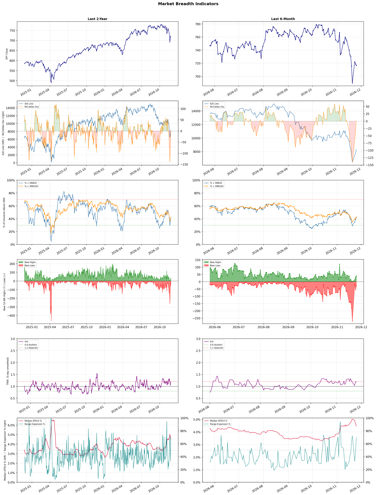

A daily market breadth and sector rotation report for active investors
| Item | Read |
|---|---|
| Regime | Defensive |
| Risk posture | Defensive |
| Universe | 1,310 stocks tracked · 41 new 52-week highs · 30 active swing setups |
| Breadth | only 42.4% of tracked stocks are above SMA50, new highs exceed new lows (41 vs 29) |
| Leadership | Advertising Agencies, Insurance Brokers, and Discount Stores |
| Weakest groups | Other Industrial Metals & Mining, Uranium, and Electrical Equipment & Parts |
Use this report to prioritize research and chart review; validate entries, stops, liquidity, earnings, and risk before acting.
| Item | Read |
|---|---|
| Primary read | Defensive regime with Defensive risk posture. |
| Research queue | STGW, APP, MGNI, EVC, OMC |
| Leadership focus | Advertising Agencies, Insurance Brokers, and Discount Stores |
| Caution list | Other Industrial Metals & Mining, Uranium, and Electrical Equipment & Parts |
| Review prompt | Check extension risk, chart location, fundamentals, valuation, and earnings before using any research row. |
| Item | Read |
|---|---|
| Primary read | 3 active risk warnings; use screen output as watchlist input only. |
| Bullish screens | OMC, AJG, MRSH, VFC, YUM |
| Bearish screens | LUMN, BULL, PONY |
| Alerts / levels | Automated trigger, stop, ATR, liquidity, reward/risk, and event-risk levels are pending future enrichment. |
| Review prompt | Open the linked chart, define trigger and invalidation, then check liquidity and event risk independently. |
Risk Posture: Defensive — screen backdrop favors caution; require independent risk review before new exposure
Metric context: McClellan below -50 = elevated selling pressure; below -100 = washout territory. Range Expansion = share of stocks with daily range above their 20-day average. Signal Density = share of tracked names appearing in signal screens.
| Breadth Date | % > SMA50 | % > SMA200 | New Highs | New Lows | McClellan | Median Range | Avg Range | Median ATR14 | Range Expansion | Signal Density |
|---|---|---|---|---|---|---|---|---|---|---|
| 2026-11-25 | 42.4% | 42.8% | 41 | 29 | 1.7 | 5.1% | 6.0% | 4.5% | 69.4% | 0.1% |

Prior comparison date: November 24, 2026
| Metric | Prior | Current | Change |
|---|---|---|---|
| Regime | Defensive | Defensive | unchanged |
| Risk Posture | Defensive | Defensive | unchanged |
| % > SMA50 | 39.0% | 42.4% | +3.4 pts |
| % > SMA200 | 41.1% | 42.8% | +1.7 pts |
| New Highs | 31 | 41 | +10 |
| New Lows | 55 | 29 | +26 |
Top-10 industries entering: REIT - Retail. Top-10 industries leaving: Medical Care Facilities. New multi-signal long setups: ADP, AHR, AJG, ASO, BDX, CCEP, DIS, DUK, EXLS. New multi-signal short setups: BULL.
| Status | Tickers | Read |
|---|---|---|
| Added | ADP, AHR, AJG, ASO, BDX, BULL, CCEP, DIS | New technical screen matches vs prior report. |
| Removed | ACHC, AEO, ALC, APP, ARHS, ARX, AZN, BAX | No longer present in today's technical screen matches. |
| Still Active | GKOS, ORI | Appeared in both current and prior reports. |
| Promoted | ORI | Model Screen Score improved by at least 15 points. |
| Downgraded | none | Model Screen Score declined by at least 15 points. |
| Direction | Industry | ETF | Prior Rank | Current Rank | Days | Rank Change |
|---|---|---|---|---|---|---|
| Rose | Airlines | N/A | 78 | 17 | 35 | +61 |
| Rose | Resorts & Casinos | N/A | 83 | 25 | 28 | +58 |
| Rose | REIT - Retail | N/A | 67 | 10 | 42 | +57 |
| Rose | Advertising Agencies | N/A | 57 | 1 | 28 | +56 |
| Rose | REIT - Residential | XLRE | 65 | 13 | 42 | +52 |
Bull: The airline industry is experiencing a bullish trend due to a combination of strong consumer demand for travel and improving financial performance, as highlighted by the soaring stock prices of major carriers like American Airlines and Southwest Airlines. Recent headlines indicate a positive outlook for the sector, with analysts noting that despite some disappointing earnings reports, the overall market sentiment remains optimistic, driven by increased passenger traffic and a rebound in travel spending as the economy continues to recover. This resurgence in demand is likely bolstered by pent-up travel desires post-pandemic, positioning the airline sector favorably compared to other industries.
Bear: While the airline industry may currently exhibit rising stock prices and strong consumer demand, this bullish sentiment overlooks significant structural challenges that could undermine long-term profitability. High operating costs, including fuel price volatility and labor shortages, combined with potential economic headwinds such as inflation and rising interest rates, could dampen consumer spending on travel. Additionally, the recent earnings disappointments, like those from United Airlines, suggest that the market may be overly optimistic about the sustainability of the current recovery, making the sector vulnerable to corrections.
Verdict: The airline industry's bullish trend is primarily driven by robust consumer demand for travel and a rebound in travel spending, as evidenced by rising passenger traffic and strong stock performance among major carriers. However, key risks remain, particularly from high operating costs and potential economic headwinds such as inflation and rising interest rates, which could dampen consumer spending and challenge the sustainability of the current recovery. Investors should remain cautious and monitor economic indicators closely, as any signs of a slowdown could lead to corrections in airline stock valuations.
Sources: Google News
Bull: The Resorts & Casinos sector is experiencing rising relative strength primarily due to a combination of resilient earnings reports and strategic dealmaking, as highlighted by recent headlines. Companies like Wynn Resorts are showing robust performance in their global hotel and casino portfolios, indicating strong consumer demand and effective management strategies, while analysts are optimistic about the sector's growth potential through 2026, as noted by The Motley Fool. This positive sentiment is further supported by Red Rock Resorts' strong market presence, positioning the industry for continued investment interest.
Bear: While the Resorts & Casinos sector may currently exhibit rising relative strength, this could be misleading as it may not reflect sustainable growth. The recent headlines indicate a focus on dealmaking amidst slower sector growth, suggesting that companies may be struggling to generate organic growth and are resorting to mergers and acquisitions to bolster performance. Furthermore, the optimism surrounding consumer demand could be overestimated, as economic uncertainties and potential shifts in discretionary spending habits may dampen future earnings, especially if inflationary pressures persist.
Verdict: The Resorts & Casinos sector's rising strength is fundamentally driven by resilient earnings and strategic acquisitions, reflecting strong consumer demand and effective management, particularly from key players like Wynn Resorts and Red Rock Resorts. However, the key risk lies in the potential overestimation of sustainable growth, as reliance on dealmaking may mask underlying challenges in organic growth, especially amid economic uncertainties and shifting discretionary spending patterns. Investors should closely monitor consumer sentiment and macroeconomic indicators to gauge the sector's long-term viability.
Sources: Google News
Bull: The rising relative strength of the REIT - Retail sector can be attributed to a growing investor confidence in retail real estate as highlighted by positive coverage from sources like Morningstar, which identifies the best REITs to buy. Additionally, the divergence in investment preferences noted in The Business Times, where retail investors are favoring REITs over banks, suggests a shift towards stable income-generating assets amidst economic uncertainty, further bolstering the appeal of retail-focused REITs. This trend is likely reinforced by the overall positive sentiment surrounding REITs in general, as indicated by multiple articles discussing their performance and investment strategies.
Bear: While the rising relative strength of the REIT - Retail sector may seem promising, it is crucial to consider the underlying economic challenges facing retail, such as inflationary pressures and changing consumer behavior towards e-commerce. Additionally, the shift in investment preferences noted by The Business Times could be a short-term reaction to market volatility, rather than a sustainable trend, as retail REITs may struggle with rising interest rates and potential declines in foot traffic, which could ultimately undermine their long-term stability and income-generating potential.
Verdict: The REIT - Retail sector is experiencing a rise in relative strength due to increased investor confidence in stable income-generating assets, as evidenced by favorable coverage from sources like Morningstar and a shift in preferences towards REITs over banks. However, key risks remain, particularly from inflationary pressures and the ongoing shift towards e-commerce, which could adversely affect foot traffic and long-term income stability for retail REITs. Investors should closely monitor economic indicators and consumer behavior trends to assess the sustainability of this bullish sentiment.
Sources: Google News
Bull: The Advertising Agencies sector is experiencing rising relative strength primarily due to its strategic adaptation to AI advancements, as highlighted by Bloomberg's report on ad agency stocks leveraging AI disruption to their advantage. Additionally, the positive outlook for advertising technology, as discussed in The Motley Fool's articles, suggests that companies within this sector are poised for growth as they innovate and enhance their capabilities, positioning them favorably against other industries. This combination of technological integration and market optimism is driving investor confidence and demand for advertising agency stocks.
Bear: While the advertising agencies sector may currently exhibit rising relative strength, this trend could be misleading as it often reflects short-term market sentiment rather than sustainable growth. The enthusiasm around AI advancements may overlook the inherent risks of over-reliance on technology, potential regulatory challenges, and the fact that many agencies may struggle to effectively integrate AI into their existing business models. Furthermore, as competition intensifies and ad spend fluctuates due to economic uncertainties, the sector may face significant headwinds that could undermine its current momentum.
Verdict: The advertising agencies sector is experiencing rising relative strength primarily due to its strategic integration of AI technologies, which enhances efficiency and effectiveness in ad campaigns, thereby attracting investor interest. However, a key risk to this momentum is the potential for over-reliance on technology and the challenges of adapting existing business models, particularly amid economic uncertainties that could impact ad spending. Investors should remain cautious and monitor regulatory developments and competitive pressures that could affect long-term growth in the sector.
Sources: Google News
Bull: The rising relative strength of the Residential REIT sector can be attributed to a combination of strong demand for rental housing and favorable market conditions highlighted in recent headlines. As noted in articles from Morningstar and US News Money, the outlook for residential REITs remains positive, with expectations of robust performance through 2026 driven by demographic trends such as increasing urbanization and a growing preference for rental living. Additionally, the resilience of residential REITs amidst challenging market trends, as discussed by TradingView and The Motley Fool, suggests that these companies are effectively navigating economic uncertainties, further enhancing investor confidence in their long-term growth potential.
Bear: While the rising relative strength of the Residential REIT sector may seem promising, it is essential to consider the potential headwinds that could undermine this bullish outlook. Rising interest rates and inflationary pressures could lead to increased borrowing costs and operational expenses, squeezing profit margins for these REITs. Additionally, the growing trend of remote work may dampen demand for rental housing in urban areas, as individuals seek more affordable living options outside of city centers, potentially destabilizing occupancy rates and rental income.
Verdict: The Residential REIT sector is experiencing rising strength primarily due to strong demand for rental housing driven by urbanization and a shift towards rental living, supported by positive market conditions and demographic trends. However, investors should remain cautious of potential risks, particularly from rising interest rates and inflation, which could increase borrowing costs and operational expenses, ultimately squeezing profit margins and impacting occupancy rates.
Sources: Google News
| Direction | Industry | ETF | Prior Rank | Current Rank | Days | Rank Change |
|---|---|---|---|---|---|---|
| Fell | Copper | COPX | 13 | 84 | 42 | -71 |
| Fell | Oil & Gas Refining & Marketing | CRAK | 1 | 65 | 42 | -64 |
| Fell | Oil & Gas Integrated | XLE | 2 | 63 | 42 | -61 |
| Fell | Oil & Gas E&P | XOP | 1 | 62 | 28 | -61 |
| Fell | Semiconductors | SOXX | 29 | 80 | 42 | -51 |
Bear: While the bull analyst attributes the recent decline in copper's relative strength primarily to tariff uncertainty, this perspective overlooks the broader macroeconomic challenges facing the copper market, including slowing global demand, particularly from China, which is a major consumer of copper. Additionally, the optimism surrounding copper's role in emerging technologies like AI may be overstated, as the transition to renewable energy and electric vehicles, which are often cited as growth drivers, is still in its infancy and subject to regulatory and supply chain constraints that could dampen demand in the near term.
Bull: Copper's recent decline in relative strength can be attributed to heightened uncertainty surrounding tariffs, which has led to a sell-off in major copper stocks like Freeport-McMoRan and Teck Resources, as highlighted in the Yahoo Finance article. Additionally, while there is optimism about copper's role in the AI boom and its potential to drive mining stock rallies, the immediate market reaction to tariff doubts has overshadowed these positive catalysts, causing volatility in the sector.
Verdict: The recent decline in copper prices is primarily driven by heightened uncertainty surrounding tariffs, which has triggered a sell-off in major copper stocks despite optimism about the metal's role in emerging technologies. However, a key risk to this bullish outlook is the broader macroeconomic challenges, particularly slowing demand from China and the nascent stage of the renewable energy transition, which could further suppress prices in the near term. Investors should remain cautious and consider the potential for continued volatility in the copper market amidst these conflicting dynamics.
Sources: Google News
Bear: While the bull analyst highlights a shift towards upstream opportunities, it's crucial to recognize that the refining sector is facing significant headwinds, including narrowing refining margins due to increased crude oil prices and potential regulatory pressures aimed at reducing carbon emissions. Furthermore, the current geopolitical landscape and economic uncertainties could lead to volatility in oil demand, undermining the stability of refining stocks. This suggests that the recent outperformance of certain refining stocks may not be sustainable, as market dynamics could quickly shift back to favor upstream producers amid a potential economic slowdown.
Bull: The Oil & Gas Refining & Marketing sector is likely experiencing a decline in relative strength due to broader market dynamics favoring upstream oil exploration and production stocks, as highlighted by multiple sources discussing the best oil stocks for 2026 and those that have significantly outperformed earnings estimates. Additionally, the focus on refining stocks that have seen substantial year-to-date gains suggests a shift in investor sentiment towards upstream opportunities, potentially driven by rising crude oil prices and increased demand, which can overshadow the refining segment's performance. This shift is further underscored by headlines emphasizing stocks with explosive growth potential, indicating a preference for companies positioned to benefit from higher oil prices rather than those focused on refining margins.
Verdict: The Oil & Gas Refining & Marketing sector is likely declining due to narrowing refining margins as crude oil prices rise, coupled with shifting investor sentiment towards upstream exploration and production stocks that promise higher returns amid increasing demand. The key risk lies in potential regulatory pressures aimed at reducing carbon emissions and the volatility in oil demand stemming from geopolitical and economic uncertainties, which could further destabilize refining stocks and lead to a broader market shift back to upstream producers. Investors should closely monitor these dynamics and consider reallocating towards upstream opportunities while being cautious of the refining sector's vulnerabilities.
Sources: Google News
Bear: While the bull analyst points to heightened competition and select outperformers as a positive sign, the broader context reveals significant headwinds for the integrated oil and gas sector. Falling relative strength indicates that the entire industry may be struggling with persistent issues such as regulatory pressures, volatile commodity prices, and increasing scrutiny over environmental impacts, which could deter long-term investment. Furthermore, the focus on specific stocks for future growth may highlight a lack of confidence in the sector as a whole, suggesting that investors are selectively betting on outliers rather than a recovery in the integrated energy space.
Bull: The Oil & Gas Integrated sector is likely experiencing a decline in relative strength due to heightened competition and investor sentiment shifting towards more promising opportunities, as evidenced by headlines discussing specific outperformers like Vaalco Energy and Imperial Oil. Additionally, the focus on long-term investment in the sector, highlighted in articles about the best oil stocks for 2026, suggests that investors may be anticipating a more favorable environment for select companies rather than the broader industry, leading to a temporary lag in performance for integrated energy stocks.
Verdict: The Oil & Gas Integrated sector's decline can be attributed to a combination of heightened competition and shifting investor sentiment towards more sustainable energy investments, leading to a preference for select outperformers rather than the broader industry. Key risks from the bear case include ongoing regulatory pressures, volatile commodity prices, and increasing environmental scrutiny, which could further undermine confidence and deter long-term investments in integrated energy stocks. Investors should consider reallocating their portfolios to focus on companies with strong fundamentals and sustainable practices while remaining cautious of the overall sector's challenges.
Sources: Google News
Bear: While the bull analyst points to potential buying opportunities stemming from a transition to renewable energy, the reality is that the oil and gas sector is facing significant structural challenges that could undermine its recovery. Falling relative strength trends indicate a lack of investor confidence, and persistent concerns about oversupply, geopolitical instability, and regulatory pressures on fossil fuels suggest that the sector may struggle to regain momentum. Furthermore, with increasing investments in renewable technologies and changing consumer preferences, the long-term outlook for traditional oil and gas stocks appears increasingly precarious, making them a risky investment in the current climate.
Bull: The relative weakness in the Oil & Gas E&P sector, as indicated by the falling trend compared to other industries, is likely driven by broader market concerns about future oil demand and pricing stability, as highlighted in recent articles discussing investment strategies for 2026. Analysts are focusing on potential shifts in energy consumption patterns, including a transition to renewable energy sources, which may be contributing to a cautious outlook for traditional oil and gas stocks. This sentiment is reflected in the headlines emphasizing the need for investors to consider the evolving energy landscape when selecting stocks, suggesting that while the sector may be under pressure now, it could present buying opportunities as market dynamics shift.
Verdict: The oil and gas E&P sector's decline is primarily driven by heightened investor concerns regarding future oil demand and the accelerating transition to renewable energy, which is reshaping energy consumption patterns. Key risks include persistent oversupply, geopolitical instability, and regulatory pressures that could further erode confidence in traditional fossil fuel investments. Investors should approach the sector with caution, considering the potential for continued volatility and structural challenges that may hinder recovery.
Sources: Google News
Bear: While the bull analyst points to robust revenue growth and potential for a rebound, the recent headlines indicate a broader and more concerning trend of sustained selling pressure in the semiconductor sector, which is now facing its worst slump since 2001. This suggests that the issues are not merely short-term volatility but rather indicative of deeper structural challenges, including oversupply, declining demand in key markets, and a significant rotation of capital away from growth sectors like semiconductors and AI, which may not recover as quickly as anticipated. Additionally, rising interest rates and inflation could further suppress consumer and business spending, exacerbating the downturn in semiconductor sales.
Bull: The recent decline in the semiconductor sector's relative strength can be attributed to a combination of macroeconomic pressures and sector-specific challenges, as highlighted by the headlines. The sell-off, described as the worst in over two decades, suggests a significant rotation of investment away from high-growth areas like AI and semiconductors, potentially driven by rising interest rates and inflation concerns, leading investors to seek safer assets. Furthermore, the mention of robust revenue growth in some semiconductor stocks indicates that while the sector faces short-term volatility, there are still strong fundamentals in play, suggesting a potential rebound as market conditions stabilize.
Verdict: The semiconductor industry's decline is primarily driven by a combination of macroeconomic pressures, such as rising interest rates and inflation, which have prompted a rotation of investment away from high-growth sectors. Key risks include sustained oversupply and declining demand in critical markets, which could hinder any potential recovery and lead to prolonged challenges for the sector. Investors should remain cautious and consider reallocating to more stable sectors until clearer signs of demand stabilization emerge.
Sources: Google News
| Industry | Rank | ETF | 7d | 14d | 28d | 42d | Chg 42d | Size | 20D | 60D | Composite | Active Setups |
|---|---|---|---|---|---|---|---|---|---|---|---|---|
| Advertising Agencies | 1 | N/A | 3 | 1 | 57 | 38 | +37 | 7 | 23.3% | 12.3% | 0.969 | 0 |
| Insurance Brokers | 2 | N/A | 5 | 13 | 8 | 33 | +31 | 6 | 9.4% | 8.6% | 0.951 | 0 |
| Discount Stores | 3 | XRT | 2 | 12 | 14 | 3 | 0 | 7 | 11.1% | 16.0% | 0.947 | 0 |
| Apparel Manufacturing | 4 | N/A | 1 | 3 | 7 | 16 | +12 | 6 | 9.4% | 26.3% | 0.944 | 0 |
| Restaurants | 5 | N/A | 6 | 10 | 16 | 20 | +15 | 16 | 8.4% | 11.0% | 0.880 | 1 |
| Household & Personal Products | 6 | XLP | 8 | 6 | 6 | 5 | -1 | 11 | 5.5% | 11.8% | 0.869 | 0 |
| Insurance - Property & Casualty | 7 | KIE | 16 | 20 | 22 | 26 | +19 | 8 | 7.4% | 6.6% | 0.858 | 1 |
| Specialty Retail | 8 | XRT | 4 | 4 | 18 | 19 | +11 | 13 | 8.5% | 19.6% | 0.852 | 1 |
| Beverages - Non-Alcoholic | 9 | XLP | 10 | 7 | 21 | 27 | +18 | 7 | 6.0% | 4.3% | 0.816 | 0 |
| REIT - Retail | 10 | N/A | 12 | 23 | 44 | 67 | +57 | 11 | 8.4% | 2.2% | 0.805 | 0 |
Rank columns (7d–42d) show the industry's rank that many trading days ago — lower is stronger. Chg 42d = rank change vs 42 trading days ago — positive means the industry moved up. 20D and 60D are the mean stock return within the industry over that period. Active Setups: count of today's swing-trade candidates from this industry appearing across all signal screens.
| Industry | Rank | ETF | 7d | 14d | 28d | 42d | Chg 42d | Size | 20D | 60D | Composite | Active Setups |
|---|---|---|---|---|---|---|---|---|---|---|---|---|
| Other Industrial Metals & Mining | 87 | N/A | 87 | 87 | 86 | 81 | -6 | 21 | -32.4% | -49.0% | 0.017 | 0 |
| Uranium | 86 | URA | 86 | 86 | 87 | 87 | +1 | 6 | -32.1% | -48.2% | 0.030 | 0 |
| Electrical Equipment & Parts | 85 | XLI | 84 | 82 | 85 | 84 | -1 | 12 | -34.1% | -41.7% | 0.043 | 0 |
| Copper | 84 | COPX | 85 | 80 | 62 | 13 | -71 | 6 | -29.3% | -34.9% | 0.066 | 0 |
| Computer Hardware | 83 | XLK | 83 | 85 | 65 | 51 | -32 | 15 | -32.8% | -35.7% | 0.080 | 1 |
| Semiconductor Equipment & Materials | 82 | SOXX | 81 | 78 | 72 | 35 | -47 | 17 | -26.5% | -26.7% | 0.092 | 0 |
| Communication Equipment | 81 | IYZ | 73 | 79 | 48 | 54 | -27 | 15 | -26.7% | -25.7% | 0.112 | 0 |
| Semiconductors | 80 | SOXX | 77 | 74 | 59 | 29 | -51 | 37 | -26.2% | -25.1% | 0.113 | 0 |
| Aerospace & Defense | 79 | ITA | 70 | 57 | 84 | 83 | +4 | 26 | -20.3% | -31.4% | 0.117 | 0 |
| Electronic Components | 78 | XLK | 78 | 77 | 70 | 55 | -23 | 10 | -23.3% | -25.5% | 0.118 | 0 |
Rank columns (7d–42d) show the industry's rank that many trading days ago — lower is stronger. Chg 42d = rank change vs 42 trading days ago — positive means the industry moved up. 20D and 60D are the mean stock return within the industry over that period. Active Setups: count of today's swing-trade candidates from this industry appearing across all signal screens.
These are research candidates from top-ranked stocks, capped at five names per industry to avoid over-concentration. Returns shown (60D, 120D, 250D) are historical — they reflect where prices have already moved, not forward expectations. Extension Risk flags names that may require extra patience or a better entry point. They are not buy signals.
Chart: TV = TradingView chart (opens in browser); PDF = local chart file (if downloaded).
| Ticker | Name | Industry | Industry Rank | Market Cap | 60D Hist | 120D Hist | 250D Hist | Extension Risk | Research Reason | Chart |
|---|---|---|---|---|---|---|---|---|---|---|
| STGW | Stagwell | Advertising Agencies | 1 | N/A | 28.6% | 71.0% | 105.0% | Constructive | Top-ranked in industry | TV |
| APP | Applovin | Advertising Agencies | 1 | N/A | 21.6% | -32.0% | -35.4% | Constructive | Top-ranked in industry | TV |
| MGNI | Magnite | Advertising Agencies | 1 | N/A | 15.5% | 80.1% | 80.1% | Constructive | Top-ranked in industry | TV |
| EVC | Entravision Communications | Advertising Agencies | 1 | N/A | 9.9% | 1.2% | 223.9% | Constructive | Top-ranked in industry | TV |
| OMC | Omnicom Group | Advertising Agencies | 1 | N/A | 6.4% | 23.0% | 32.1% | Constructive | Top-ranked in industry | TV |
| MRSH | Marsh | Insurance Brokers | 2 | N/A | 16.2% | 32.5% | 21.2% | Constructive | Top-ranked in industry | TV |
| AJG | Arthur J. Gallagher | Insurance Brokers | 2 | N/A | 11.9% | 35.6% | 19.0% | Constructive | Top-ranked in industry | TV |
| BRO | Brown & Brown | Insurance Brokers | 2 | N/A | 9.1% | 33.9% | -1.5% | Constructive | Top-ranked in industry | TV |
| AON | Aon PLC | Insurance Brokers | 2 | N/A | 6.8% | 6.3% | -0.7% | Constructive | Top-ranked in industry | TV |
| BWIN | Baldwin Insurance Group | Insurance Brokers | 2 | N/A | 6.7% | 62.5% | 16.5% | Constructive | Top-ranked in industry | TV |
| WMT | Walmart | Discount Stores | 3 | N/A | 24.6% | 11.3% | 22.0% | Constructive | Top-ranked in industry | TV |
| COST | Costco | Discount Stores | 3 | N/A | 19.0% | 15.3% | 23.7% | Constructive | Top-ranked in industry | TV |
| DLTR | Dollar Tree | Discount Stores | 3 | N/A | 15.6% | 39.9% | 38.7% | Constructive | Top-ranked in industry | TV |
| DG | Dollar General | Discount Stores | 3 | N/A | 6.8% | 35.7% | 30.5% | Constructive | Top-ranked in industry | TV |
| TGT | Target | Discount Stores | 3 | N/A | 5.9% | 42.6% | 98.5% | Constructive | Top-ranked in industry | TV |
| VFC | VF Corp | Apparel Manufacturing | 4 | N/A | 65.2% | 31.0% | 27.1% | Extended | Top-ranked in industry; extended | TV |
| PVH | PVH Corp | Apparel Manufacturing | 4 | N/A | 33.1% | 24.7% | 15.3% | Constructive | Top-ranked in industry | TV |
| LEVI | Levi Strauss & Co. | Apparel Manufacturing | 4 | N/A | 21.2% | 10.3% | 15.3% | Constructive | Top-ranked in industry | TV |
| ZGN | Ermenegildo Zegna NV | Apparel Manufacturing | 4 | N/A | 4.4% | -6.1% | 28.4% | Constructive | Top-ranked in industry | TV |
| UA | Under Armour-C | Apparel Manufacturing | 4 | N/A | -2.9% | -13.5% | 5.7% | Lagging | Top-ranked in industry; lagging | TV |
These are technical screen matches from existing signal files. They are not trade recommendations. Trigger, stop, ATR, liquidity, reward/risk, and event risk still require separate validation until those inputs are available.
Model Screen Score is weighted by signal count, industry rank, freshness, and setup type. It is not a probability of profit, expected return, or suitability rating. Industry cap: max 3 candidates per industry.
Signal glossary: Momentum Pullback = stock in an uptrend that has pulled back 10–30% and shows re-entry conditions. MA Compression = short- and long-term moving averages converging, often preceding a directional move. Three-Day Up/Down = three consecutive closes in the same direction. New 52Wk High/Low = price reached a new annual extreme.
Chart: TV = TradingView chart (opens in browser); PDF = local chart file (if downloaded).
| Ticker | Industry | Setups | Close | Industry Rank | Signal Count | Model Screen Score | Reason | Chart |
|---|---|---|---|---|---|---|---|---|
| OMC | Advertising Agencies | New 52Wk High; Three-Day Up | 90.70 | 1 | 2 | 100 | Multi-signal; top industry breakout | TV |
| AJG | Insurance Brokers | New 52Wk High; Three-Day Up | 292.39 | 2 | 2 | 100 | Multi-signal; top industry breakout | TV |
| MRSH | Insurance Brokers | New 52Wk High; Three-Day Up | 216.66 | 2 | 2 | 100 | Multi-signal; top industry breakout | TV |
| VFC | Apparel Manufacturing | New 52Wk High; Three-Day Up | 21.47 | 4 | 2 | 93 | Multi-signal; top industry breakout | TV |
| YUM | Restaurants | New 52Wk High; Three-Day Up | 167.12 | 5 | 2 | 93 | Multi-signal; top industry breakout | TV |
| PG | Household & Personal Products | New 52Wk High; Three-Day Up | 173.23 | 6 | 2 | 93 | Multi-signal; top industry breakout | TV |
| PGR | Insurance - Property & Casualty | New 52Wk High; Three-Day Up | 238.70 | 7 | 2 | 93 | Multi-signal; top industry breakout | TV |
| WRB | Insurance - Property & Casualty | New 52Wk High; Three-Day Up | 79.34 | 7 | 2 | 93 | Multi-signal; top industry breakout | TV |
| ORI | Insurance - Property & Casualty | MA Compression; Three-Day Up | 41.00 | 7 | 2 | 88 | Multi-signal; top industry setup | TV |
| ASO | Specialty Retail | New 52Wk High; Three-Day Up | 73.33 | 8 | 2 | 85 | Multi-signal; top industry breakout | TV |
| CCEP | Beverages - Non-Alcoholic | New 52Wk High; Three-Day Up | 117.99 | 9 | 2 | 85 | Multi-signal; top industry breakout | TV |
| SNY | Drug Manufacturers - General | New 52Wk High; Three-Day Up | 54.39 | 12 | 2 | 85 | Multi-signal; new-high strength | TV |
| BDX | Medical Instruments & Supplies | New 52Wk High; Three-Day Up | 221.24 | 16 | 2 | 77 | Multi-signal; new-high strength | TV |
| DUK | Utilities - Regulated Electric | New 52Wk High; Three-Day Up | 131.90 | 18 | 2 | 77 | Multi-signal; new-high strength | TV |
| WEC | Utilities - Regulated Electric | New 52Wk High; Three-Day Up | 119.09 | 18 | 2 | 77 | Multi-signal; new-high strength | TV |
| RDY | Drug Manufacturers - Specialty & Generic | New 52Wk High; Three-Day Up | 15.35 | 22 | 2 | 77 | Multi-signal; new-high strength | TV |
| TAK | Drug Manufacturers - Specialty & Generic | New 52Wk High; Three-Day Up | 23.01 | 22 | 2 | 77 | Multi-signal; new-high strength | TV |
| DIS | Entertainment | New 52Wk High; Three-Day Up | 125.60 | 26 | 2 | 70 | Multi-signal; new-high strength | TV |
| AHR | REIT - Healthcare Facilities | New 52Wk High; Three-Day Up | 60.24 | 27 | 2 | 70 | Multi-signal; new-high strength | TV |
| GKOS | Medical Devices | New 52Wk High; Three-Day Up | 259.90 | 37 | 2 | 70 | Multi-signal; new-high strength | TV |
| VZ | Telecom Services | MA Compression; Three-Day Up | 47.28 | 35 | 2 | 65 | Multi-signal; compression setup | TV |
| VRDN | Biotechnology | New 52Wk High; Three-Day Up | 37.91 | 45 | 2 | 65 | Multi-signal; new-high strength | TV |
| VRTX | Biotechnology | New 52Wk High; Three-Day Up | 564.12 | 45 | 2 | 65 | Multi-signal; new-high strength | TV |
| ADP | Software - Application | New 52Wk High; Three-Day Up | 316.72 | 46 | 2 | 65 | Multi-signal; new-high strength | TV |
| EXLS | Information Technology Services | New 52Wk High; Three-Day Up | 45.10 | 47 | 2 | 65 | Multi-signal; new-high strength | TV |
| IBN | Banks - Regional | New 52Wk High; Three-Day Up | 36.50 | 52 | 2 | 65 | Multi-signal; new-high strength | TV |
| ORLY | Auto Parts | MA Compression; Three-Day Up | 96.69 | 69 | 2 | 50 | Multi-signal; compression setup | TV |
Bearish setups — stocks making new lows or showing persistent downside patterns. Validate carefully before acting.
| Ticker | Industry | Setups | Close | Industry Rank | Signal Count | Model Screen Score | Reason | Chart |
|---|---|---|---|---|---|---|---|---|
| LUMN | Telecom Services | New 52Wk Low; Three-Day Down | 3.66 | 35 | 2 | 40 | Multi-signal; new-low weakness | TV |
| BULL | Software - Application | New 52Wk Low; Three-Day Down | 4.06 | 46 | 2 | 35 | Multi-signal; new-low weakness | TV |
| PONY | Information Technology Services | New 52Wk Low; Three-Day Down | 3.27 | 47 | 2 | 35 | Multi-signal; new-low weakness | TV |
How To Use This Report
| Use | Purpose |
|---|---|
| Market map | Start with breadth, regime, risk warnings, and what changed since the prior report. |
| Industry scan | Use leading, deteriorating, rising, and declining industries to focus research. |
| Research queue | Treat long-term candidates as names for deeper fundamental, valuation, and chart review. |
| Technical review | Treat bullish and bearish screen matches as watchlist inputs that require independent trigger, stop, liquidity, and event-risk checks. |
| Source follow-up | Use chart links and source files to verify raw inputs before relying on any row. |
What This Report Is Not
| Not | Meaning |
|---|---|
| Investment advice | The report does not evaluate personal objectives, risk tolerance, tax situation, account type, or suitability. |
| Buy/sell recommendation | Named tickers are research candidates or screen matches, not recommendations to transact. |
| Price target | The report does not provide fair value estimates, targets, or expected returns. |
| Trade plan | Trigger, stop, sizing, reward/risk, liquidity, and event-risk review remain separate user work. |
| Performance claim | Model Screen Score is not validated historical performance or a forecast of future results. |
| Item | Note |
|---|---|
| Version | Daily Report Methodology v1 |
| Model Screen Score | Screen-fit rank based on signal count, industry rank, freshness, and setup type. |
| Not predictive proof | The score is not expected return, probability of profit, historical validation, or suitability analysis. |
| Industry ranks | Composite industry ranks use existing daily ranking outputs and historical rank columns when available. |
| Research candidates | Long-term rows are research candidates from ranked stocks and leading industries, with historical returns labeled as historical only. |
| Technical matches | Bullish and bearish rows are screen matches requiring independent chart, trigger, stop, liquidity, and event-risk review. |
| Source | Status | Rows | Path |
|---|---|---|---|
| Market breadth | present | 1254 | breadth_20261125.csv |
| Industry composite rankings | present | 87 | all_industry_composite_20261125.csv |
| Top ranked stocks | present | 92 | top_ranked_composite_20261125.csv |
| All ranked stocks | present | 1310 | all_stocks_composite_sorted_20261125.csv |
| Top momentum pullbacks | present | 1464 | top_momentum_pullbacks_20261125.csv |
| MA compression | present | 1464 | ma_compression_stocks_20261125.csv |
| Three-day up/down | present | 302 | three_day_up_down_stocks_20261125.csv |
| New 52-week members | present | 70 | breadth_new_52wk_members_20261125.csv |
This report is generated from automated technical screens and is for informational and research purposes only. It is not investment advice, a solicitation, or a recommendation to buy or sell any security. Past performance is not indicative of future results. You are solely responsible for your own investment decisions. Consult a licensed financial advisor before acting on any information herein.